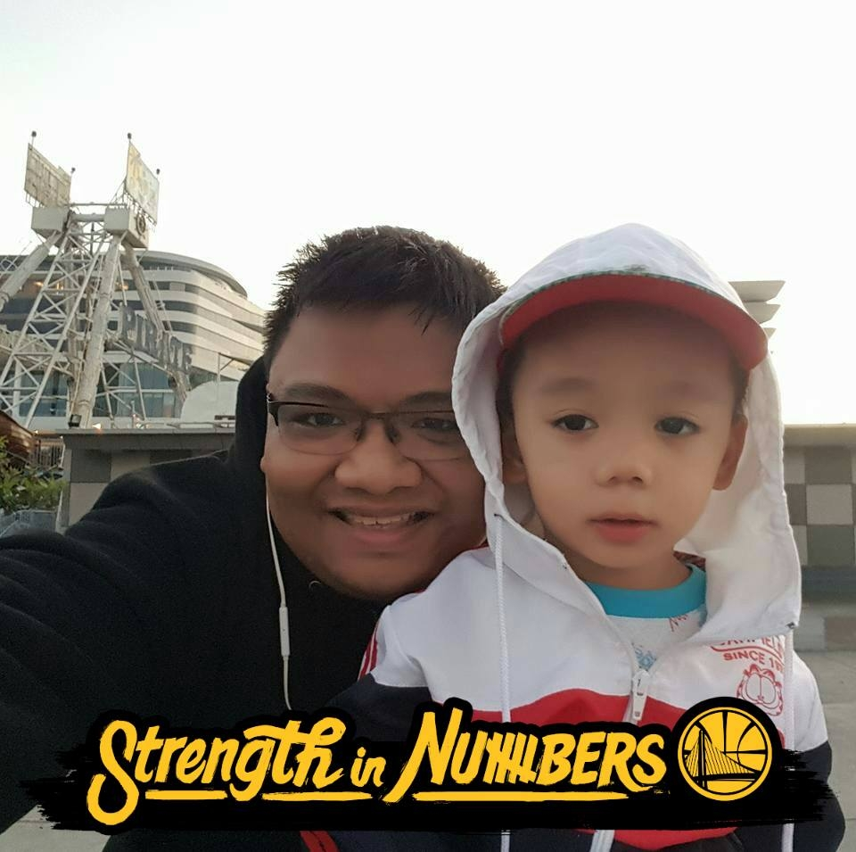

Customer Service Professional transitioning into Workforce Real-Time Management, driven by data, efficiency, and problem solving.

I am an operations professional with experience in customer support, workforce planning, and real-time operations monitoring. I graduated from Informatics International College with an Advanced Diploma in Computer Studies Major in Programming.
My goal is to grow further as a Workforce Management Analyst where I can apply forecasting, real-time monitoring, and operational analytics to improve team performance and service levels.
92%
87%
95%
6.2m
Accenture – Customer Service Analyst (2024 – Present)
Alorica Philippines – Customer Service Analyst (2023 – 2024)
TaskUs – Workforce Capacity Planner (2022 – 2023)
Concentrix – Workforce Real-Time Analyst (2016 – 2022)
Concentrix – Technical Support Representative (2014 – 2016)
Email: zhuhearted01@gmail.com
Facebook
View Profile
Instagram
View Profile